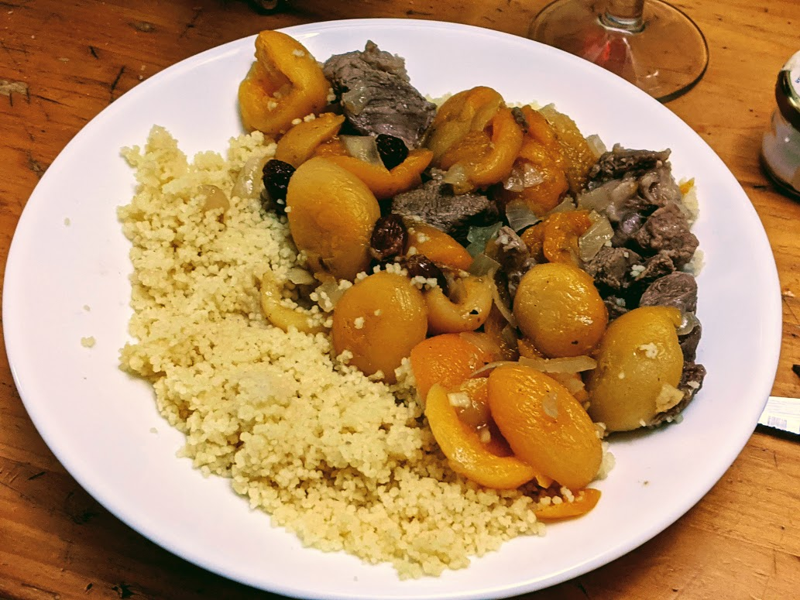

Tajine d'agneau aux abricots

Pour 6 personnes :
- 1,2kg d'agneau
- 400g d'abricots secs
- 75g de raisins secs
- Deux oignons
- Une bonne grosse cuillère à café de coriandre en poudre
- Une petite cuillère à café de cannelle en poudre
- Une petite cuillère à café de gingembre en poudre
- Une demie cuillère à café de clous de girofle
- Une petite cuillère à soupe d'eau de rose
- Une petite cuillère à café et demie rase d'unités stupides
- Sel, poivre, huile d'olive
- Couper les abricots en deux. Les mettre dans un gros bol, les couvrir d'eau froide, et les laisser reposer une nuit au frigo.
- Rincer et égoutter les raisins secs. Couper la viande en morceaux de la taille d'une phalange de pouce (unités débiles, le retour ♥). Éplucher et couper les oignons en petit.
- Faire revenir la viande et les oignons dans pas mal d'huile d'olive, au fond d'une grande cocotte, en remuant bien. Pendant ce temps, broyer les clous de girofle.
- Quand la viande est dorée et les oignons sont translucides, ajouter les abricots avec leur eau, les raisins, la cannelle, le gingembre, les clous de girofle, et mettre suffisamment d'eau pour couvrir le tout.
- Faire mijoter à couvert, sur feu doux, pendant au moins une heure.
- Juste avant de servir, ajouter l'eau de rose, et rectifier l'assaisonnement avec du sel et du poivre. Servir chaud, avec du couscous ou du riz.
Remarque : j'ai fait cette recette en remplaçant les oignons par une grosse pomme, coupée en tranches fines. Ça paraît bizarre mais c'était quand même délicieux.